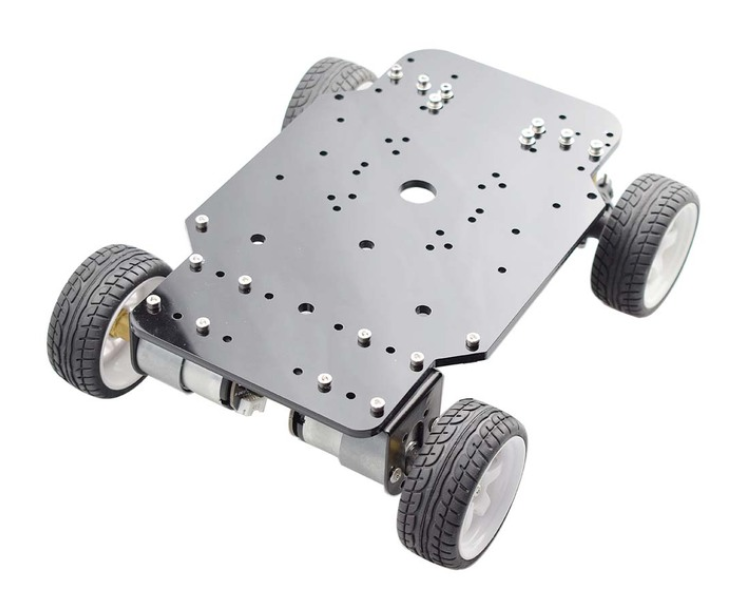
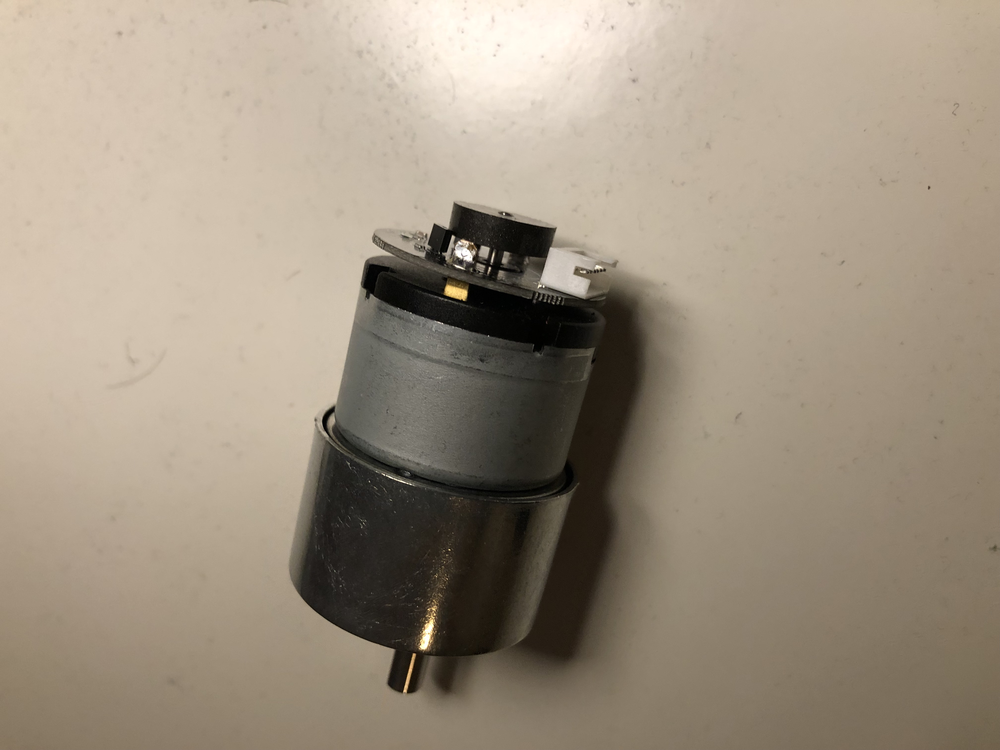

These are the trials and tribulations of making my little robot cart RoboPi.
I want to take part in the PiWars challenges and challenges indeed they are.
Choices, choices, choices
Well what is this cart going to look like? It depends on what it should be able to do. So reading the website of PiWars was the place to start. After reading and pondering it looks like that speed is important and image recognition. We want to see different kinds of colored objects like barrels, zombies, and colored locations. So a camera is needed. Since we also want to turn corners and follow lines, we need to be able to steer the robot. Also, it would be nice if we can detect walls. We also need to be able to navigate a route without the help of a line. Finding out the distance to a wall would also be very handy to prevent the robot from bumping into it. Maybe even our little robot should be able to grab a barrel and even fire a little cannon. So the option to add some components for a specific challenge is the way to go. With all this, we have the hardware, mechanics, electronics, and software to consider.
It would be nice if we can use a lot of open source and available stuff.
The base
Our little robot has to carry batteries, a camera, some computer, and other stuff. So it should not be too little but also not too large, just right. The base that seems to fit the bill is this thing.
Dust is the enemy
The encoders of the motors have no protection and are very close to the ground. In order to protect them against the dust and dirt of the disaster world, we need to protect them.

This is much better

Attaching the main parts
First things to do is to attach parts to the base of the robot like the battery holder, some pcb to experiment on, add an arduino uno with motor speed controll and so on.

Lets add the rpi4 and camera with a frame
The raspberry pi 4 will go to the front of the robot. I made a 3d design for it and also a place for the camera

The time of flight sensors are at the front and two on the side. In the past I found that these sensors can be troubled by ir light so I added a sun protection cone to each one of them.
Yikes, spikes!
The RoboPi robot has an orientation sensor onboard, the chip BNO055. A great chip but now something weird was happening. When rotating the robot at random times, huge spikes appeared in the z-angle that we are interested in. After much pondering and trying another driver, still no luck. So time for plan B. By using a median filter, we can filter out these random spikes, and now the trace of the orientation shows a smooth curve for the z-angle. Happy days, on to the next challenge.
Wireless access to my robopi robot
A very nice luxury is the abality to access the desktop of the raspberry pi 4 of the robot from my laptop using wifi. After some fidling and reading internet pages about this, the robopi robot now is a wifi access point that I can use from my laptop. Happy days.
We need a cannon !
To beat those pescy zombies we need a cannon ! Luckely there was a great design on thingiverse.com of Markus Purtz that I could adjust. Now the canon is starting to look like one.

Two brushless motors will drive the nerf dart to the zombie. A servo pushes the dart from a cartridge to the barrel and there is another to tilt the canon so we can aim for zombies higher up.
That cannon needs a base (first try)
The big canon needs a sturdy base on the robot to stand on. The first attempt from my 3d printed design turned out not quite right...

So back to the drawing board with a more modular design of the base that can be printed in several parts and then assembled using bolts.
That cannon needs a better base (second try)
Measurements of the holes for the base were wrong (duh). Measured again, twice, now should be good.

Now in red and even seems to fit on the chassis, life is good. Changed the way the poles are attached to the main frame with a bolt and screw attach.
Smoke signals are not ok
If your hardware gives out smoke signals, that is not good :-). Looks like the motor driver is gone because of a software error with PWM I was not anticipating. A well, luckly there are two motor drivers on the bord, need to fire up my soldering iron to fix this. Turns out that did not work because also the second motor driver got toasted somehow. I found a electronic speed controller I can use and added that to the robot. Disadvante is that now I can only control the speed of the two motors by one controller. So no differential speed is possible but the steering front should be enough I expect.
A laser pointer on the barrel
To find out where the cannon is pointing to I added a small laser pointer diode. It is controlled by the Arduino uno and so controllable by software. Made a small bracket that clamps to the barrel. Probably needs some super glue but it is ok for now.